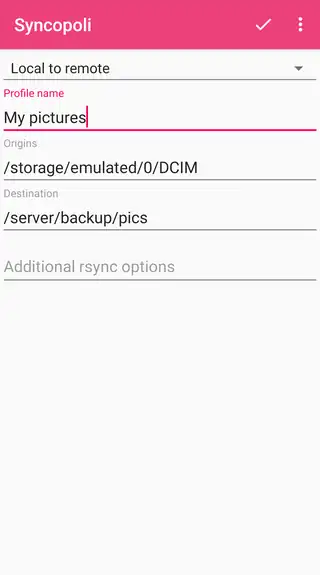

An rsync client that allows you to backup files/directories on your phone to your remote server. Features: * Phone to remote server backup * Remote server to phone replication * Supports transport through both Rsync and SSH protocols * Supports authentication by password or public key
SHA-256: 813a7bd8c8e48aa94db5ffed47031c92e54659c9b3c8cc39bad1e570c7b97598

امسح الكود لفتح صفحة التطبيق
Scan to open this app page
لو كنز مش متثبت عندك: نزّل متجر كنز.
Not installed? Get the Kanz store.